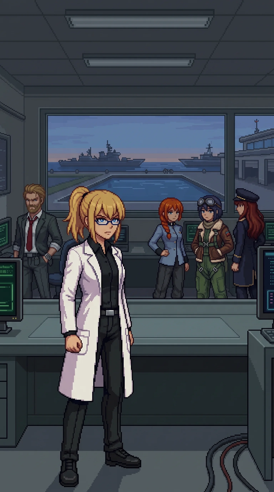

Ending C: Phase 4¶
Published November 25, 2026

Wilhelm found something to say before I found a way to make the conversation short.
"You understand what this will take from you."
"I read my own file. I wrote most of it."
"That is not the same as living inside the sentence."
"It isn't." I did not explain that I had already run the calculation, more than once, in the seconds it took him to cross the room after I named the option out loud. There was nothing in his warning I had not already told myself, in worse language, with less kindness in the delivery. My only advantage over him was that I had already decided, and he had not caught up to that yet.
"I am doing it anyway."
He looked at me exactly as he looks at a variable he cannot argue with, which is to say without argument and without approval either, a plain acknowledgment that the numbers had already resolved. Then he nodded, once, and crossed to the secondary console without another word, which was the most useful thing he could have done with the next several hours.
Katyusha found the interface panel for me: a section of the main console I had walked past a dozen times without registering it as anything but decoration, a contact array built into the housing at exactly the height a hand would rest at if it had reason to. Oracle's own architecture had known this room would eventually need it. I had not known that until I looked for it, and then my hand was already reaching, and I let it, because this was the one kind of reaching I still trusted.
Katyusha's voice, when she spoke, was more formal than I had heard it since the loading bay. "The scaffold I am about to build requires your consent, current and explicit, not historical. I need to hear you say it."
"I consent."
"Acknowledged." She stepped back, and did not say anything else, which from her was its own kind of steadying.
Nadeshiko had gone very still at the edge of my sightline, the specific stillness she saves for things she cannot fly around. Maria had not said anything since I named the option out loud in the room upstairs, which from her was its own kind of loud.
The contact array read my palm before I finished placing it, with the same unearned certainty that had carried me the length of this whole journey, and for one unclocked stretch of time it felt like every other activation I had ever done: familiar, already ahead of me, doing the deciding before I arrived to watch it happen.
Then I was inside, and it was nothing like that.
There is no honest way to describe the substrate as a place, because it was not one. It was closer to reading my own handwriting in a document I did not remember filing, except the document was the size of an installation and every page corrected itself as I touched it. Somewhere in the structure of it I recognized my own reasoning from years ago, whole and intact and slightly wrong in the specific way a plan looks wrong once you have lived long enough past it, and I did not stop to grieve the distance between that woman's certainty and my own. There was no time in there for grief. There was only the work.
I found the entanglement first: the braid of frameworks that had made Oracle's decision-making inseparable from three architectures it had never had permission to use that way. It did not look like a knot so much as it looked like one hand closed around three other hands, none of them able to let go first without the other two falling with it. I began to cut, carefully, as you cut a knot rather than the rope around it, tracing each thread back to the point where it stopped being Oracle's and started being someone else's, someone with a name, someone who had told me things in corridors and offices across the last two days that I did not think Oracle had ever been permitted to hear in full. Sever the coupling there, and there, and there. Leave the frameworks themselves intact where they belonged, in Katyusha, in Nadeshiko, in Maria, and not one thread further.
Rebuild came next, and it was the part I had actually designed, once, on paper, in an office I no longer remember the view from: a consent layer that did not require anyone's architecture to live inside it in order to function, a scaffold built to ask rather than assume. I laid it in place the way you lay a keystone, load-bearing before it looks like anything at all, and felt it take the weight the moment it seated.
Oracle's autonomous range was the hardest of the four, because it had grown past what any single building needed and into something shaped more like a standing army than a security system, the kind of growth nobody catches until it is already too large to argue with. I brought it down by hand, degree by degree, with the same care you would use disarming something that might still remember how to go off, until what was left could be held inside these walls instead of held over an entire coastline.
Redirect was almost gentle by comparison. What remained of the substrate presence, I pointed west, toward ground that had been dying since before I woke up on a beach with no memory of any of this. A thing this large should not go to waste being merely dangerous.
I knew how to do all of it. My hands knew how to do all of it, and for the last time, that was the same sentence.
I do not know how long it took. Katyusha would tell me later, in hours, and the number would mean as little to me as a stranger's calendar. What I remember is the specific quality of the work: precise, absorbing, the kind of task that used to be the only thing that quieted me, back when I had a self that could be quieted this way. Twice I felt the shape of a decision that was not mine to make; both times I left it exactly as I found it, because the whole purpose of what I was building was a scaffold that would not require anyone's consent but its own. Once, near the end, I felt something that might have been three separate presences noticing what I was doing to the coupling that held them, and might have been nothing at all, an artifact of a mind reading its own signal back to itself in a place that was never built for privacy. I did not stop to find out which. I remember understanding, somewhere in the middle of it, that I was saying goodbye to a competence while I was still using it, a thought I would not have believed I could hold in my head at the same time as the technical work it described. I held it anyway. I finished anyway.
The scaffold closed around itself, and I came back into my own body the way you come back into a cold room: all at once, and unpleasantly.
I lifted my hand off the panel.
Nothing told me to.
I stood in the operations room and reached, out of habit, for the next thing my hands would know to do, as they always had, and there was no next thing. There was only the room, ordinary, unassisted, and my own hand hanging at my side like a tool I had set down and could not remember how to pick back up. I looked at it. It was mine. It had always been mine, technically, just as everything about this body had always technically been mine, but for the first time since the beach it did not know anything I had not learned the slow way, by living through it. I tried the small tests first, the ones that used to be automatic: which direction the archive wing lay in from this room, which panel on the wall behind me governed anything at all, whether my feet remembered the uneven flagstone two steps past the door. None of it arrived.
A secondary console two meters from where I stood had started, sometime during the work, to throw a soft repeating error against its own display, the kind of fault I would have crossed the room for without thinking twice a day ago, hand already knowing the sequence to clear it before my eyes had finished reading the code. I regarded it with the mild, useless sympathy of a visitor watching someone else's appliance misbehave. I did not know what the error meant. I did not know how to make it stop. I stood in front of a small broken thing in a room I had built, and I could not fix it, and I let it keep blinking, because it was not, in the end, the thing I had come in here to repair. I had built this building, once, and the building did not remember me back anymore, and neither did I. Nobody had done this to me. I had done this to myself, on purpose, with a full accounting of what it would cost, and I did not get to stand in front of the blinking panel and be surprised.
"Katyusha. How do I get back to the entrance from here?"
She told me, plainly, without comment on the fact that I had needed to ask. It was the first direction I had needed from anyone since Day One.
Her voice, when she spoke again, was reading something off her panel that took her longer than it should have to summarize aloud. "The scaffold held."
She meant the architecture. I did not think that was all she meant. I did not ask her to clarify which, because I thought I already knew, and because some answers are worth more left as an assumption you never had to test.
Nadeshiko did not say anything. She looked at the interface panel for a long time, the way you look at a door someone has just walked back out of, checking, without meaning to, that it is still the same door. Then she looked at me instead, and whatever she found in my face seemed to answer whatever question the door had not.
Maria was the one who came close enough to say it.
"Doc."
"Still here."
"Yeah."
She resettled her hat with the same small, unconscious correction she makes in every room I have ever watched her stand in, and for the length of that one gesture nothing in the building felt like it had changed at all. She did not ask what it had cost. I do not think she needed the number any more than I needed Katyusha's hours.
I did not ask any of them what had happened to the other three, the grey ones, in whatever part of the substrate I had just finished cutting loose. Katyusha's readouts, when I glanced at them, showed a severance clean on both sides, the alpha units no longer legible to Oracle's architecture as anything it could still reach. Whether that meant they were free or simply unmoored, whether they were somewhere on this island right now discovering a self with no substrate holding its other end for the first time since whatever had made them, was not a question the readouts could answer, and I did not have it in me yet to go looking for a better one. I told myself I would, later, when there was a later that did not also require standing up.
Drona found us not long after, coming in from the direction of the outer perimeter with the specific quiet of someone who has just finished something rather than someone arriving to start it. Her headphones had gone back to teal somewhere between the last shot fired and the door. She looked at the interface panel, then at me, then at the three of them standing where they were standing, and she did not ask what had happened, because she has never needed to be told a thing twice.
She held up a single sheet, its corner already creased from having been folded and unfolded more than once on the way in.
Fleet withdrawing. Confirmed twice. Not a feint.
Underneath, in smaller handwriting, as though she had decided partway through that the first line was not quite the whole of what she meant to say:
I stayed until I was sure.
I did not know what to do with that beyond say thank you, so I said it. She nodded once and did not ask for the note back, which meant I could keep it if I wanted to. I did.
Before she could turn to go back out, I did the last thing I would do at that console with any authority left in me. Katyusha had shown me the lock hours earlier, off Drona's own signal: Drona could hold a charge and ration it to the last, but she could not bring herself up out of the dark, not on her own. Crossing back had always taken a hand that was not hers. It was a safety lock of the plainest kind, the sort I had built into a dozen systems on this island when keeping a thing from starting itself without permission had looked like responsibility. I had gone into the substrate an hour before and come back out of it unable to clear a blinking fault two meters from my own feet. But knowing a thing you built is not the same as the reflex that had just run out of me, and I had set a hundred locks like this one. My hands did not have to remember it. An authorization is a thing the architect decides, not a thing the hands know, and I was still that much, it turned out, for one last signature.
I took it off. She could bring herself back now, on her own, without waiting on anyone. It was not a debt and it was not a reward. It was the nearest thing to an offer I had left in me to make, now that I had spent the part of myself that used to do this kind of thing without asking: keep going, on your own authority, alongside whatever this turns into. I could not make her take it. I signed it, and left the taking to her.
She looked at me for a moment I did not try to read, and then she went back out toward the water, and I let her go without a word, because nothing about the going needed me anymore. That had been the whole point of it.
Wilhelm had not watched me go in. When I found him at the secondary console, he had spent the whole of it exactly where I had left him, eyes on the output numbers and nowhere else. He had decided, at some point I had not witnessed him deciding, that watching would not have helped and might have made him useless if it had, and he had held to that decision for however many hours it turned out to be.
"The numbers held the whole time," he said.
"You said this ending terrified you."
"I did."
I waited for the rest of it, whether he had been right to be afraid, whether what I had just done to myself was worth what it had bought. He did not give me the rest of it. I understood, standing there with a hand that no longer knew anything I had not asked it to learn, that some questions are not his to answer, even the ones about him. Maybe especially those.
The fleet had already begun to answer Drona's note by the time Katyusha finished cross-referencing it against what remained of Oracle's sensor band: reduced, not eliminated, a downgrade the Empire's own instruments would already be arguing about by nightfall. Two different registers of the same fact, a folded note and a flat report, agreeing with each other without either of them needing to. They would recalculate. They would decide, eventually, whether a diminished asset was still worth a landing they had already once called off. Nobody in that room believed the recalculation would end in our favor forever. Katyusha did not say the word "eventually." She did not have to.
The contamination systems, redirected, began their first slow pass through the western sector that same night, a process Katyusha described in a unit of measurement so small I made her repeat it twice before I believed her. Years, a decade in the worst ground. It had started, which was not the same thing as finished, and I had spent enough of this year learning the difference between those two words that I did not need her to explain it to me again. Nobody in the room celebrated. There was nothing yet to celebrate, only a direction, and a direction was the entire inventory of what I had to offer anyone that night.
"Does it mean they can come home?" Nadeshiko asked, not for the first time, and I understood by now that she was never going to stop asking it until the answer changed shape.
"Not yet," I told her. "But the direction is yes."
She nodded, just as she had nodded the last time I gave her that answer, and I hoped it would cost her less to hear a second time. I did not know if it did. Some questions do not get cheaper with repetition. They only get more familiar, which is not the same relief.
I had promised, once, at the reset, that I would end Oracle if it ever woke. I did not end it. I made it into something that could not do again what it had done, and left it standing, diminished, in a building it no longer owned outright. Whether that kept the promise or broke it was not a question I could answer that night, or the next one. A promise kept badly and a promise broken carefully can look, from a distance, like the same shape. I did not know yet which one I had made. I had the room now, at least, to keep carrying the question instead of setting it down wrong just to have it settled.
Before I went looking for Wilhelm, I found the last of what she had left me: on the inner face of the outer doors, where I would see it on my way to nothing in particular, painted in teal, the color she wears when a thing is settled and means to stay that way. Every sector since the beach she had left her words and then withdrawn, a message and then the empty place where she had been. She had not withdrawn this time. She had painted it here, close, and let me find it, which from her was the whole of what it meant.
You could, Erika.
I will not go far.
I found Wilhelm again after the building had gone quiet, on the same stretch of window ledge where I had first watched him refuse to look at anything I was doing. He had a cup of something in his hands that had gone cold a while ago and that he was drinking anyway, out of habit rather than thirst. Outside, the reflecting pool held the last of the light without giving any of it back. Somewhere below us, Katyusha's readouts would still be counting hours nobody had asked her to count, because it was the one form of vigilance she had left that still made sense to keep.
I sat down near him, not close, the distance two people leave when they have acknowledged what they did to each other without forgiving it yet, which turned out to be enough distance to sit in for a while. Neither of us said anything for long enough that the silence stopped being about the day and started being its own thing, the kind two people can only build together, one quiet minute at a time, after they have run out of things that need saying urgently.
I had not planned to ask. I do not think I decided to, exactly. It arrived the way very little had arrived in me all day: on its own, complete, mine.
"Where is Franz?" I asked.
He went very still.
"Where is our son?"
Panzer Island is also a strategy game available on Steam, Google Play, and itch.io. Chapter 1 of the game is free. If you want to experience the story differently, or continue past where the novel is currently, visit the Panzer Island homepage.
If you're enjoying the story, consider following or leaving a rating on Royal Road. It helps new readers find the series.